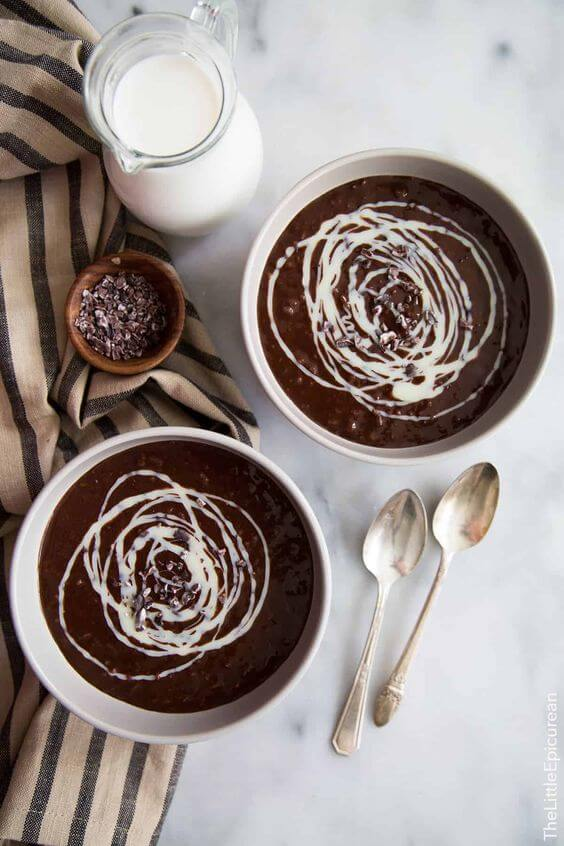
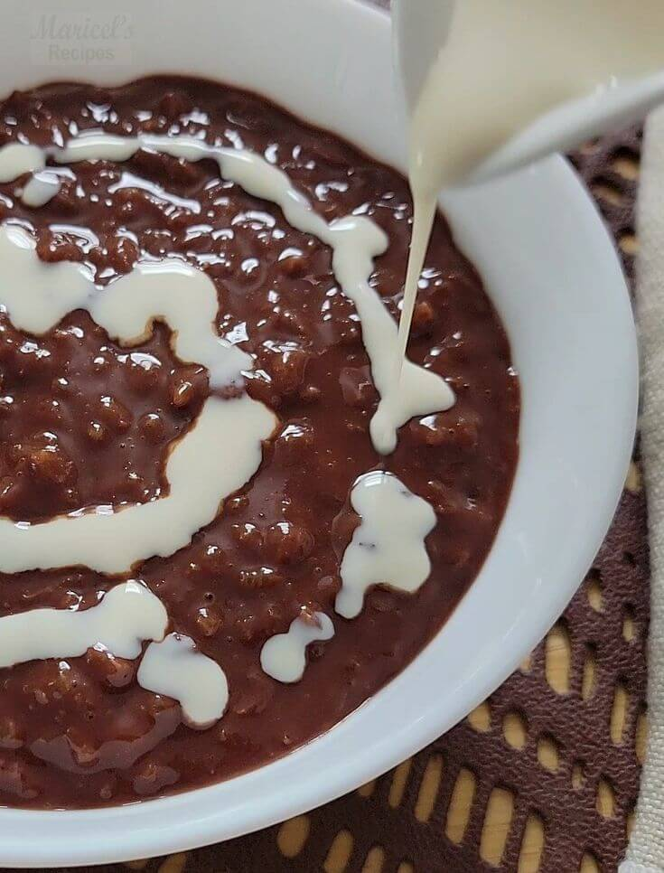

Sa mga malalamig na umaga o sa mga ulan-ulan na hapon, isang kahanga-hangang pagkaing Pilipino ang
sumasalubong sa atin—ang champorado. Ang ganitong pagkain ay hindi lamang nagpapainit ng katawan, kundi
nagbibigay rin ng kasiyahan sa bawat kagat. Ang champorado ay isang pinagsasama-samang tatak ng kultura, tamis
ng tsokolate, at kahalagahan ng pamilya sa bawat tasa na nalulunod sa timpla ng malasutlang ligaya.
Ang champorado ay karaniwang inihahanda sa pamamagitan ng pagluluto ng malagkit na bigas na may kasamang
tsokolate. Ang kasalukuyang bersyon ng champorado ay ginagamitan ng tsokolate na gawa sa tablea, gatas,
asukal, at malagkit na bigas. Ang prosesong ito ay nagbibigay ng malagkit at kakaibang lasa na puno ng ligaya
at kasiyahan. Kapag hinahaluan ito ng gatas, ang resulta ay isang mabangong at malasutlang tsokolate na
nagbibigay ng sarap sa bawat kahigop.
Ang pagluluto ng champorado ay hindi lamang paghahalo ng mga sangkap, ito rin ay paghahalo ng tradisyon,
pagkakaisa, at pagmamahal sa pamilya. Ang pagluto nito ay maaaring maging isang okasyon ng pagtitipon at
pagsasama-sama ng pamilya. Sa bawat pagluto ng champorado, naipapakita natin ang halaga ng pag-aalaga at
pagbibigayan sa ating mga mahal sa buhay.
Ang champorado ay hindi lamang isang simpleng pagkain, ito rin ay nagbibigay-daan sa mga tao upang
magsama-sama. Ang mga tasa ng champorado na inihahanda sa tahanan o mga karinderya ay nagiging daan upang ang
mga tao ay magkakasama at magbahagi ng kasiyahan sa pagkain. Ang bawat kagat ng champorado ay nagbibigay ng
pakiramdam ng komportableng kasiyahan at nagpapalabas ng ngiti sa mga labi.
Sa Pilipinas, ang champorado ay hindi lamang pang-almusal o pang-hapunan, ito rin ay nagdudulot ng mainit na
pagmamahal at kasiyahan. Ang tamis ng tsokolate na bumabalot sa malagkit na bigas ay nagpapakita ng kakaibang
kultura at tradisyon ng bansa. Sa bawat pagkain nito, naipapakita natin ang ating pagkakakilanlan bilang mga
Pilipino.
Kaya sa susunod na pagkakataon na matikman mo ang champorado, buksan ang mga pintuan ng kasiyahan at
pagmamahal. Ibigay ang bawat kagat ng champorado nang may pag-ibig at pagmamalasakit. At sa bawat tasa na
mapapuno ng malasutlang tsokolate, alalahanin ang halaga ng pamilya at ang kahalagahan ng ating kultura.
Champorado: Ang Paboritong Tsokolateng Almusal ng Pinoy


.jpg)